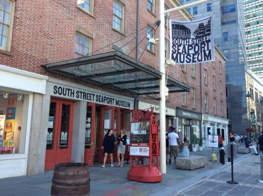
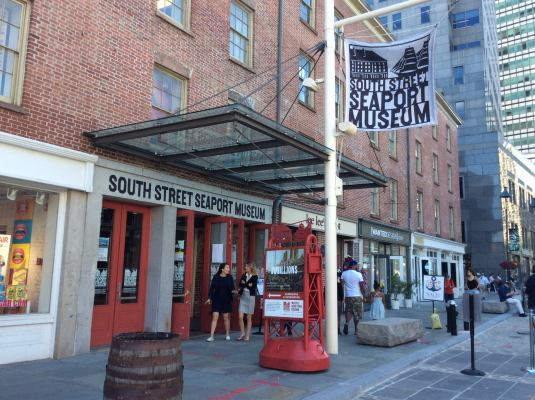
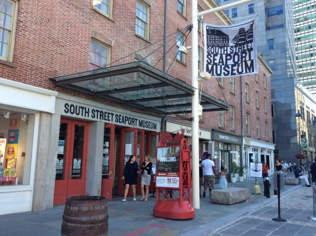
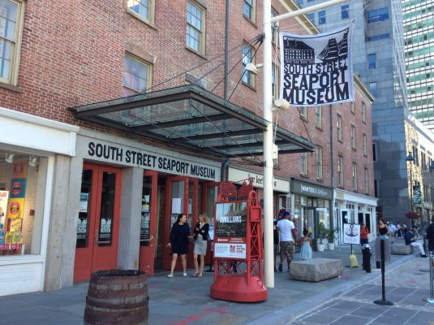

 

The South Street Seaportis a historic area in the New York City borough of Manhattan, centered where Fulton Street meets the East River, and adjacent to the Financial District. The Seaport can trace its roots to the 17th century, when the neighborhood served as a vital Dutch West India Company outpost connecting the new and old worlds. During these years, the trade at the Seaport helped catapult New York City;s economy into one of the most robust in the world. By the 1860s, the Seaport was a 24/7 commercial hub, showing that New York was truly “the city that never sleeps.” Ships from this era can still be seen at the South Street Seaport Museum. The 19th century also saw the opening of the Fulton Fish Market, which became home to one of the nation&rsqo;s busiest.
The South Street Seaport Museum, which maintains several centuries-old schooners, has in its fleet on an 1885 boat called the Pioneer, which during the summer you can book for 2-hour floating tours of the harbor. Pack a lunch and a bottle of wine; the boat is BYOB and snacks;and if you time it right, you can catch the sunset. From Memorial Day to December, folks can tuck into a tasty Red Hook Lobster Pound lobster roll or sticky Filipino-inspired chicken wings at this Seaport outpost.
Location:Seaport Museum, 211 Fulton Street, New York, NY 10038
Hours:Open Tuesday - Sunday, 7:00 am to 7:00 pm
Contact:646-315-4478